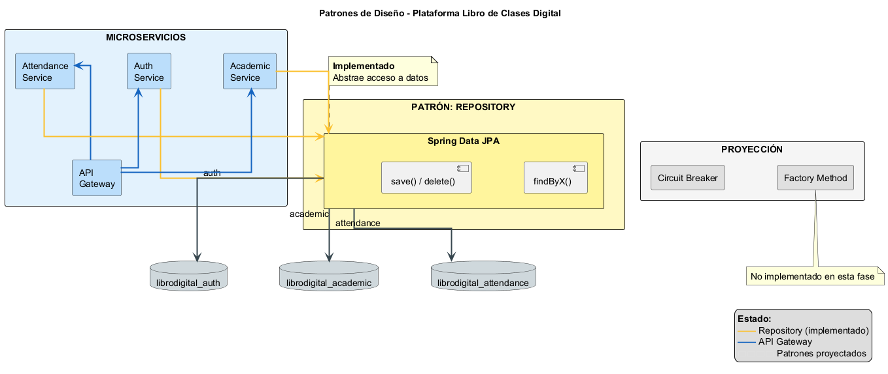
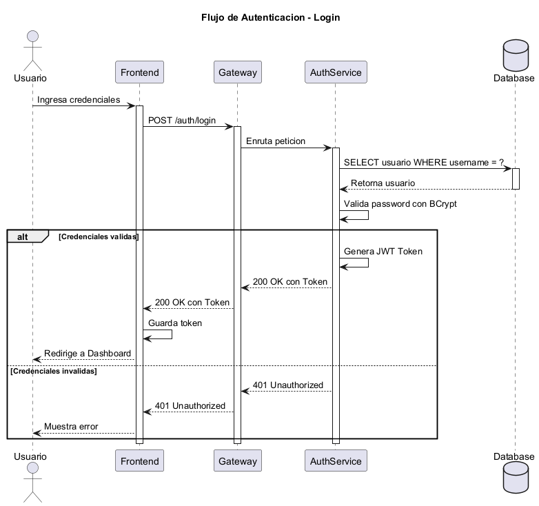

Proyecto: Plataforma Libro de Clases Digital
Asignatura: DSY1106 — Desarrollo Fullstack III
Evaluación: Parcial N°3 — Encargo
Equipo: Cristian Monsalve / Héctor Olivares
El sistema implementa una arquitectura de microservicios para la gestión académica de un colegio: autenticación centralizada, dominio académico (estudiantes, cursos, notas) y dominio de asistencia (sesiones, registros, anotaciones). Todos los servicios backend se exponen al exterior a través de un API Gateway, y el frontend React consume únicamente ese punto de entrada.
La comunicación entre capas es REST sobre HTTP/JSON. Cada microservicio persiste en su propia base PostgreSQL (patrón Database per Service), sin claves foráneas entre bases distintas.

Fuente editable: infraestructura/diagrams/architecture_patterns_simple.puml
El diagrama muestra:
frontend-react, puerto 8094)apiGetaway, puerto 8090) como único punto de entrada| Componente | Carpeta | Puerto | Responsabilidad |
|---|---|---|---|
| API Gateway | apiGetaway/ |
8090 | Enrutamiento, CORS, proxy hacia microservicios |
| Auth Service | authService/ |
8091 | Login, JWT, usuarios, roles (RBAC) |
| Academic Service | academicService/ |
8092 | Estudiantes, docentes, cursos, matrículas, evaluaciones, notas |
| Attendance Service | attendanceService/ |
8093 | Sesiones de clase, asistencia, anotaciones |
| Frontend React | frontend-react/ |
8094 | UI por rol (admin, docente, apoderado, estudiante) |
┌─────────────────┐
│ frontend-react │ React 19 + TypeScript + Vite
│ :8094 │ VITE_API_URL → http://localhost:8090
└────────┬────────┘
│ HTTP/JSON + Authorization: Bearer {JWT}
▼
┌─────────────────┐
│ apiGetaway │ Spring Cloud Gateway 2025.1.2
│ :8090 │
└────────┬────────┘
│
┌────┴────┬────────────┬──────────────┐
▼ ▼ ▼ ▼
/auth/** /students/** /sessions/** /admin/**
│ /courses/** /attendances/**
│ /grades/** /annotations/**
▼ ▼ ▼
┌────────┐ ┌──────────┐ ┌──────────────┐
│ auth │ │ academic │ │ attendance │
│ :8091 │ │ :8092 │ │ :8093 │
└───┬────┘ └────┬─────┘ └──────┬───────┘
▼ ▼ ▼
PostgreSQL PostgreSQL PostgreSQL
librodigital librodigital librodigital
_auth _academic _attendance
| Prefijo | Destino | Servicio |
|---|---|---|
/auth/** |
http://localhost:8091 |
authService |
/admin/** |
http://localhost:8091 |
authService |
/students/**, /courses/**, /teachers/**, /subjects/** |
http://localhost:8092 |
academicService |
/enrollments/**, /evaluations/**, /grades/**, /guardians/** |
http://localhost:8092 |
academicService |
/sessions/**, /attendances/**, /annotations/** |
http://localhost:8093 |
attendanceService |
El frontend no invoca directamente los puertos 8091–8093 en desarrollo; siempre usa el gateway en 8090, lo que desacopla la UI de la topología interna.
La especificación de endpoints está documentada en:
infraestructura/postman/Libro_Digital.postman_collection.jsoninfraestructura/postman/README.mdFlujo típico de prueba:
POST /auth/login → obtiene accessTokenAuthorization: Bearer {token}
POST /auth/login.authService valida con BCrypt y emite JWT (accessToken + refreshToken).ADMIN, DOCENTE, APODERADO, ESTUDIANTE.POST /admin/users (solo ADMIN).Usuarios demo: admin_colegio, prof_castillo, apoderado_demo, estudiante_demo — contraseña test1234.
| Capa | Tecnologías |
|---|---|
| Backend | Java 21, Spring Boot 4.1.0, Spring Security, Spring Data JPA, Maven |
| Gateway | Spring Cloud Gateway 2025.1.2 |
| Frontend | React 19, TypeScript, Vite 8, Tailwind CSS, React Router |
| Base de datos | PostgreSQL 16+ (una instancia, tres bases lógicas) |
| Testing backend | JUnit 5, Mockito, Spring Boot Test, JaCoCo 0.8.12 |
| API testing | Postman Collection |
| Patrón | Aplicación en el proyecto |
|---|---|
| API Gateway | apiGetaway centraliza rutas y simplifica el cliente |
| Database per Service | Tres bases PostgreSQL independientes |
| Repository | Interfaces JpaRepository por entidad |
| DTO | Objetos de transferencia separados de entidades JPA |
| Service Layer | Lógica de negocio en *ServiceImpl, controllers delgados |
| MVC | Controllers REST + modelos JPA + vistas React |
Detalle ampliado: infraestructura/docs/patrones.md
infraestructura/ddl/00_create_databases.sql)authService → puerto 8091academicService → puerto 8092attendanceService → puerto 8093apiGetaway → puerto 8090frontend-react → puerto 8094 (npm run dev)| Diagrama | Ubicación | Contenido |
|---|---|---|
| ER Auth | infraestructura/diagrams/auth_er_model.png |
Tablas users, role, user_roles |
| ER Academic | infraestructura/diagrams/academic_er_model.png |
Catálogos + entidades académicas (3FN) |
| ER Attendance | infraestructura/diagrams/attendance_er_model.png |
Sesiones, asistencia, anotaciones |
| Autorización RBAC | infraestructura/diagrams/security_authorization.png |
Control de acceso por rol |
La arquitectura propuesta cumple los requisitos de la evaluación: microservicios desacoplados, integración frontend-backend vía API REST, persistencia independiente por servicio y punto de entrada único (gateway) que facilita el despliegue y las pruebas de integración con Postman.